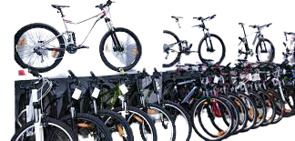

Delving into the realm of COVID-19 data, this project embarks on a journey of exploration, cleaning, and forecasting, utilizing the power of SQL Server and Tableau. Together, we embark on a quest to uncover patterns and predict the pandemic's trajectory for the next two years. Our journey unveils enlightening insights, revealing the distribution of deaths across continents, the impact of infection on countries' populations, and the global death percentage. Embark with us as we illuminate the COVID-19 landscape through data-driven storytelling

This project aims to clean and prepare the Nashville Housing dataset for further analysis.

Transforming raw data using SQL's powerful filtering and conditional capabilities to create meaningful tables.

Harness Tableau's intuitive data visualization tools to uncover hidden patterns, trends, and relationships within your data, transforming it from mere information into valuable business intelligence

Leveraging data visualization techniques in MS Excel we gain comprehensive insights into bike sales trends across age groups, gender, average income and education levels
Utilizing the power of Power BI, we delve into the intricacies of data, uncovering insights into programmer preferences, career entry challenges, salary satisfaction, work-life balance, voter distribution and average salaries across job titles
Automate the process of gathering cryptocurrency data from various websites' APIs using Python. By utilizing Python's web scraping capabilities, the project simplifies the task of collecting real-time crypto data, enabling users to analyze trends and make informed decisions